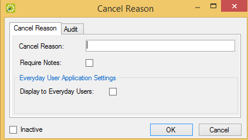

Configure Cancel Reasons
When you are canceling a reservation in your EMS system, you can indicate a reason for the cancellation. You can configure a cancel reason that is a single word or phrase (such as Event Postponed, Other, and Will Reschedule), or you can configure a cancel reason so that the user who is canceling the reservation must enter additional information about the cancellation.
To configure cancel reasons, follow these steps:
- On the EMS menu bar, click Configuration > Other > Cancel Reasons. The Cancel Reasons window opens. This window lists all the cancel reasons that are currently configured in your EMS database and that have a status of Active.

Cancel Reasons Window
Optionally, to view all cancel reasons in your EMS database regardless of status, under Show, click Inactive.
- Click New. The Cancel Reason dialog box opens.

Cancel Reason Dialog Box
- In the Cancel Reason field, enter a name or description for the new cancel reason (maximum 50 characters, including spaces), for example, Customer Postponed.
- Optionally, do one or more of the following:
- If you want the user who is canceling the reservation to enter supporting information for this cancel reason, select Require Notes.
- If you want the cancel reason to be listed as an option for a user who is canceling the event in , then select Display to Everyday Users.
- By default, a cancel reason is added as an active reason. Select Inactive to inactivate the reason.
- Click OK. The Cancel Reason dialog box closes. You return to the Cancel Reasons window with the newly added reason automatically selected.